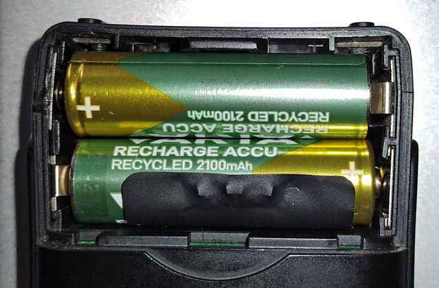

Empfangsbeobachtungen und Erfahrungen mit dem Yupiteru MVT-7000
Adrian Böhlen
Version 1.3 vom 02.02.2025
Einleitung
Im einleitenden Bericht zur Filtermodifikation habe ich bereits einige Empfangsbeobachtungen mit dem Yupiteru MVT-7000 notiert, diese sind allerdings begrenzt auf den UKW-Hörfunkempfang in der Betriebsart Breitband-FM (WFM). Damit wird erst ein kleiner Teil der Fähigkeiten dieses Empfängers abgedeckt. Nachfolgend daher einige weitere Beobachtungen, die auch andere Wellenbereiche und/oder Betriebsarten einschliessen, ausserdem technische Details, sowie Erfahrungen mit Zusatzgeräten. Die Reihenfolge der Themen ist etwas willkürlich, aber die einzelnen Abschnitte bauen aufeinander auf.
Themen
UKW-DX in Schmalband-FM

Abb. 1: Die Signale des weit nördlich der Schweizer Grenze liegenden Senders Witthoh kann der MVT-7000 in Unterbach BE, mitten in den Alpen, noch mit 3 von 5 S-Stufen wiedergeben, dies allerdings nur in NFM.
Eigene Aufnahme vom 01.10.2024
Bei den Empfangstests in Unterbach BE habe ich beim UKW-DX zwischendurch versuchshalber auch mal auf NFM umgeschaltet. Dabei zeigt sich ein gänzlich anderes Bild als in WFM: Zum einen ist die Empfindlichkeit deutlich höher und das S-Meter springt oft zwei bis drei Stufen nach oben. Zum anderen sind die beschriebenen Grosssignaleffekte weitaus schwächer und Sender, von denen in WFM keine Spur zu erkennen ist, sind laut und «deutlich» hörbar, z.B. Radio 7 von Witthoh auf 102.5 MHz mit 3 S-Stufen (in WFM durch «Geistersender» zugedeckt). Auch die Trennschärfe ist so gut, dass selbst 100 kHz neben Ortssendern Empfang möglich ist, z.B. der Bantiger auf 93.2 MHz (SRF 2) neben dem nur 5.6 km entfernten und 0.5 kW starken Sender Brienz/Wellenberg auf 93.1 MHz (SRF 1). Für ausgesprochenes DX in diesem Frequenzbereich ist der Empfänger also in der Stellung NFM durchaus zu gebrauchen, wenngleich dies den erheblichen Nachteil mit sich bringt, dass dynamik-komprimierte und/oder stark modulierte Signale kaum lesbar sind. Am besten geeignet für solche Versuche sind Kultur- und/oder Klassik-Programme (getestet mit SRF 2, SWR Kultur und dem Deutschlandfunk). Auch die Frequenzstabilität ist in NFM ausgezeichnet und es zeigen sich bei längerer Betriebsdauer keinerlei Abweichungen.
Keramikfilter für Schmalband-FM

Abb. 2: Das 15 kHz-Filter auf der 455 kHz-Ebene mit seiner typischen Kästchenform.
Eigene Aufnahme vom 20.09.2024
In Zusammenhang mit der Betriebsart NFM lohnt sich ein Blick auf die dort verwendete Zwischenfrequenz (ZF). Im Gegensatz zu WFM wird das Signal hierzu auf 455 kHz hinunter gemischt, wie das bei schmalen Bandbreiten allgemein üblich ist. Für kaskadierte, d.h. mehrstufig hintereinander angeordnete Filter fehlt hier ebenso der Platz wie bei WFM, weshalb es ein Bauteil allein richten muss. Dieses stammt vom mir bis dato nicht bekannten Hersteller NKT und trägt die Bezeichnung LF-B15. Allerdings zeigt es die typische Kästchenform, wie man sie auch von 455 kHz-Filtern anderer Hersteller kennt, die meist in einem schwarzen oder gelben Gehäuse angeboten werden (wurden).
Das Datenblatt ist zwar in japanischer Sprache verfasst, dennoch lassen sich die relevanten Parameter gut erkennen. Demnach beträgt die Bandbreite bei -6 dB 15 kHz und bei -40 dB 40 kHz. Auf den Diagrammen mit den Frequenzcharakteristika lässt sich erkennen, dass die obere Flanke im Abstand von 100 und 200 kHz zwei Nebenresonanzen (bis ca. -25 dB) aufweist. Stark einfallende Nachbarsender im UKW-Bereich werden auf jeden Fall gut unterdrückt, wie im vorherigen Abschnitt bereits belegt ist.
Der Hersteller NKT scheint nicht mehr zu existieren, muRata bietet aber weiterhin keramische Filter in diesem Gehäuse an. Eine Modifikation durch einen baugleichen Typen mit schmalerer Bandbreite wäre also auch bei diesem Filter prinzipiell möglich. Da es allerdings für AM und NFM gleichermassen verwendet wird, macht dies m.E. wenig Sinn. Sollte jedoch ein Ersatz ins Auge gefasst werden, so dürfte sich der Typ CFULA455KB2A-B0 hierfür am besten eignen. Auf der Platinenrückseite sind im Bereich des Filters allerdings zahlreiche SMD-Widerstände verlötet, weshalb sich dieses Unterfangen wesentlich anspruchsvoller gestalten würde, als der Ersatz des WFM-Filters.
Wie gut sperren die Filter?

Abb. 3: Stark einfallende Signale (hier S9 vom eigenen CB-Sender, gemessen mit dem Lowe HF-225) bereiten dem MVT-7000 einige Probleme.
Eigene Aufnahme vom 20.10.2024
Ausgehend von den Daten der eingesetzten Filter und unter Zuhilfenahme des eigenen CB-Senders auf 27.185 MHz lässt sich nun prüfen, wie gut die Filter bei einem starken Signal sperren. Als Messempfänger für die Signalstärke dient der in ca. 1 m Distanz von der Sendeantenne aufgestellte Lowe HF-225 von 1989, der ebenfalls einen koaxialen 50 Ohm-Antennenanschluss aufweist (PL-259 Norm), in den ich eine passende Teleskopantenne eingeschraubt habe. Das S-Meter zeigt knapp über S9 an, was einer Eingangsspannung am Antennenanschluss von ungefähr 50 µV entspricht. Dies ist nun kein überaus hoher Wert und weniger als ich erwartet hatte. Gerade im Sichtfeld starker Sender dürften in der Praxis noch deutlich stärkere Pegel zu registrieren sein. Als Testanordnung ist dies aber ein realistisches Szenario und daher gut geeignet.
Moduliert mit Musik in Schmalband-FM geht es nun darum zu prüfen, wie weit abseits der eigentlichen Frequenz der MVT-7000 dieses Tonsignal noch hören lässt und dies sowohl in NFM wie auch in WFM.
In NFM lässt sich das Signal bis 27.12 MHz hinunter hören, gefolgt von einigen weiteren Durchschlägen, z.B. auf 27.07 MHz. Weiter abwärts ist Ruhe. In der Gegenrichtung gibt es Empfang bis 27.215 MHz, gefolgt von einem undefinierbaren Geräuschpegel, der verschwindet, wenn der Sender abgestellt wird. Nach 200 kHz gibt es einen kräftigen Durchschlag bei 27.385 MHz, wie dies gemäss den Daten des Herstellers zu erwarten war (siehe vorheriger Abschnitt). Weitere schwache Durchschläge sind bei 27.44 und 27.525 MHz zu registrieren, danach herrscht auch hier Ruhe.
In WFM ist das Signal bis 26.7 MHz durchgehend zu hören, danach ist das Band relativ sauber, aber das Tonsignal ist weiterhin ganz schwach im Hintergrund wahrnehmbar und dies bis ca. 23.6 MHz hinunter. In der Gegenrichtung bleibt das Signal bis 27.35 MHz hörbar, aber auch hier ist es beim Weiterscannen permanent schwach im Hintergrund zu registrieren, aber auch einige starke Durchschläge sind zu beobachten, z.B. auf 34.3 MHz.
Der Test bestätigt insgesamt die bisher gemachten Erfahrungen. Das einzelne SFE-Filter im WFM-Zweig hat leider nur eine geringe Sperrwirkung, weshalb starke Signale auch in grossem Abstand zur Sendefrequenz noch zu hören sind, obwohl das Diagramm der Frequenzcharakteristik für die Weitabselektion eine Dämpfung bis 50 dB ausweist. Demgegenüber sperrt das Filter auf der 455 kHz-Ebene deutlich besser, jedoch kann es auch hier zu einigen Problemen im Nahbereich starker Sender kommen.
Weltweiter Empfang auf Kurzwelle

Abb. 4: Vor allem die internationalen Kurzwellensender sind oft in guter Qualität mit dem MVT-7000 zu empfangen, so wie hier Radio România Internațional mit seinem deutschsprachigen Programm nachmittags auf 9600 kHz, welches mit einer Leistung von 300 kW vom Standort Țigănești nördlich von Bukarest ausgestrahlt wird.
Ein Kopfhörer ist auf der Oberseite eingesteckt.
Eigene Aufnahme vom 26.09.2024
Der MVT-7000 ist bekanntlich ein Breitbandempfänger, daher lohnt sich ein Blick auf andere Wellenbereiche. Nun heisst es zwar manchmal, der Kurzwellenbereich sei bei den meisten Funkscannern nur ein Werbeargument und in der Praxis kaum zu gebrauchen , beim MVT-7000 trifft das aber ganz und gar nicht zu. Wie bereits gesehen, entspricht die AM-Bandbreite etwa drei Kurzwellenkanälen à 5 kHz, was in der Praxis weniger ein Problem ist, als man vielleicht denken könnte. Beim Vergleich mit einem klassischen portablen Weltempfänger hoher Qualität (Panasonic RF-B45 von 1991) zeigte sich, dass der MVT-7000 die meisten mit dem Vergleichsgerät gehörten Sender ebenfalls empfangen kann und dies mit der bei diesem Gerät auf Kurzwelle nicht ideal angepassten Teleskopantenne. Yupiteru hat diesen Frequenzbereich offensichtlich sehr ernst genommen und dem Empfänger auch dort eine überdurchschnittliche Empfindlichkeit beschert. Weitere Details dazu in den nächsten Abschnitten.
Externe Antennen für Kurzwellenempfang

Abb. 5: Die Grahn-Antenne (hier die GS2 von 1995 mit dem kombinierten Mittel- und Kurzwellenmodul ML-1-S) lässt sich gut mit dem MVT-7000 verwenden. Zur Verbindung ist ein kurzes Koaxkabel RG58 mit BNC-Stecker beidseitig erforderlich. Ausserdem benötigt diese Antenne eine externe 12 V-Stromversorgung.
Eigene Aufnahme vom 25.10.2024
Wie schon mehrfach erwähnt, ist der MVT-7000 hochempfindlich und verarbeitet auch sehr schwache Antennenspannungen noch zu hörbaren Signalen. Auf der anderen Seite reagiert er im wahrsten Sinne des Wortes «empfindlich» auf starke Signale und ist dann anfällig für allerhand Grosssignalstörungen. Aus diesem Grund erscheint es zunächst wenig sinnvoll, an den BNC-Anschluss eine externe Antenne anzuschliessen, wo doch selbst die voll ausgezogene Teleskopantenne manchmal schon zuviel des Guten ist. Eine Ausnahme gibt es aber: Selektive Rahmenantennen (engl. Magnetic Loops) empfangen die magnetische Komponente der elektromagnetischen Wellen und dies nur in einem schmalen Frequenzbereich. Sie sind folglich bei jedem Senderwechsel neu einzustellen, unterdrücken dafür aber sehr wirkungsvoll störende Signale anderer, unerwünschter Sender. Solche Antennen lassen sich mit etwas Aufwand selber bauen, daneben gibt es auch verschiedene käufliche Produkte, wie beispielsweise jene des deutschen Herstellers Grahn. Hierbei handelt es sich um aktive Antennensysteme, d.h. im Basisgerät ist ein Verstärker integriert, der immer eingeschaltet sein muss. Um den Empfänger nicht zu überfordern, dreht man den entsprechenden Regler am besten zunächst auf das Minimum zurück, was oft schon ein genügend starkes Signal ergibt. Andernfalls kann man versuchen, ob mit einer höheren Verstärkung eine Empfangsverbesserung eintritt.
Bei Empfangsversuchen zeigte sich, dass mit einer solchen Antenne insbesondere während der Tagesdämpfung durchaus Sender recht ordentlich empfangen werden können, die mit der Teleskopantenne nicht hörbar sind. Als Beispiel sei hier der 10 kW starke und von meinem QTH rund 350 km entfernte Sender Rohrbach/Waal in Bayern auf 6070 kHz erwähnt, der tagsüber nur sehr schwach ankommt. Abends und nachts, wenn die Signale vor allem auf den unteren Bändern insgesamt deutlich stärker werden, ist dieser Aspekt weniger bedeutend, trotzdem sind auch dann Verbesserungen möglich. Dies vor allem deshalb, weil die selektive Rahmenantenne den Empfänger stark entlastet und so das Hintergrundrauschen weitaus geringer ist als beim Betrieb mit der Teleskopantenne, die natürlich «alles» empfängt. Allerdings will solch eine aktive Antenne mit Strom versorgt sein; im Falle der erwähnten Grahn-Antenne sind dies 12 V Gleichspannung, die über ein externes Netzteil eingespeist werden müssen. Daher eignet sich diese Art Antenne eher für den stationären Betrieb. Ist ein mobiler Betrieb erwünscht – schliesslich haben wir es ja mit einem portablen Empfänger zu tun – käme allenfalls eine selbst gebaute, mobile und passive Rahmenantenne in Frage, wie sie im Buch «Technik, Tips & Tricks» beschrieben ist. Ob sich eine nach diesem Prinzip arbeitende Antenne auch für höhere Frequenzen als die Kurzwelle bauen und sinnvoll einsetzen lässt, möchte ich bei Gelegenheit noch untersuchen. Ergebnisse folgen hier zu einem späteren Zeitpunkt.
Wie weit hinunter reicht der Empfangsbereich?

Abb. 6: Auch das geht: Tropenbandempfang mit dem MVT-7000. Der nur 1.5 kW starke Sender Weenermoor auf 3995 kHz, nahe der nicht ganz tropischen Nordseeküste, lässt sich mithilfe der Grahn-Antenne frühmorgens einwandfrei empfangen. Um einem Störton aus dem Weg zu gehen, ist die Frequenz 10 kHz tiefer, auf 3985 kHz eingestellt.
Eigene Aufnahme vom 25.10.2024
Wie bereits erwähnt, beginnt der garantierte Empfangsbereich bei 8 MHz, jedoch lassen sich auch Sender bis ins 49 m-Band bei 6 MHz einwandfrei empfangen. Da stellt sich die Frage, ob das Gerät auch bei tieferen Frequenzen noch Empfang liefert. Dies herauszufinden wird allerdings dadurch erschwert, dass es weiter unten nur noch wenige Rundfunksender gibt. Die so genannten Tropenbänder (60, 75, 90 und 120 m) im Bereich 2 – 5 MHz werden in den Ländern der tropischen Zone, denen sie einst zugeteilt waren, kaum noch benutzt; auch dort findet Rundfunk mittlerweile primär auf UKW statt. Jedoch gibt es in anderen Weltgegenden durchaus noch Aktivitäten, wenn auch wenige. Welche es sind, lässt sich graphisch und in tabellarischer Form auf der Seite http://www.short-wave.info/index.php anzeigen
Während sich bei den Empfangsversuchen im Oktober 2024 abends keine einzige Station zu Gehör bringen lässt (auch nicht mit dem Vergleichsgerät Panasonic RF-B45), sieht es frühmorgens schon besser aus: Mit der zuvor beschriebenen Grahn-Antenne lässt sich WWCR Nashville, TN auf 4840 kHz im 60 m-Band (100 kW Sendeleistung) ganz schwach hören, womit eindeutig bewiesen ist, dass der MVT-7000 eben auch ein richtiger Weltempfänger ist! Fast noch überraschender ist der erstaunlich gute Empfang von Radio HCJB auf 3995 kHz im 75 m-Band, vom kleinen, nur 1.5 kW starken Sender Weenermoor in Ostfriesland. Aufgrund eines Störsignals im oberen Seitenband muss hier aber auf 3985 kHz abgestimmt werden.
Noch weiter unten herrscht die grosse Leere. Das 90 - und 120 m-Band (2 – 3 MHz) war schon früher selbst für Spezialisten mit stationärem Kurzwellenempfänger eine harte Nuss. Dies gilt heute, wo es nur noch eine Handvoll aktiver Sender in diesen Bändern gibt, erst recht. Starke Rundfunksignale finden sich erst wieder auf der Mittelwelle (ca. 500 – 1700 kHz), auch wenn die Zahl der diesen Bereich noch nutzenden Sender in Europa inzwischen überschaubar ist. Trotzdem ist in den Abend- und Nachtstunden immer noch einiges zu holen. Jedoch kann der MVT-7000 auch mit der Grahn-Antenne und einem (selbst gebauten) Mittelwellen-Modul hier nichts mehr empfangen.
Somit lässt sich als Fazit festhalten, dass die Empfangsgrenze wohl irgendwo bei 3 MHz liegen dürfte, und das ist für ein Gerät, das erst ab 8 MHz spezifiziert ist, eine ausgezeichnete Leistung, zumal die Empfangsleistungen schon in diesem inoffiziellen Bereich sehr gut sind.
Video hören
Einst wurden Funkscanner – namentlich jene mit durchgehendem Empfangsbereich – auch gerne zum TV-Fernempfang benutzt, weil sich damit die Tonkanäle analoger Fernsehsender genau wie Rundfunksender empfangen liessen und dies auch dann, wenn das Signal zu schwach für ein TV-Gerät (mit Bildwiedergabe) war. Analoge TV-Sender gibt es allerdings längst nicht mehr. Oder doch?
Tatsächlich dürfte es noch zahlreiche Haushalte geben, in denen ein analoger TV-Sender steht. Das hört sich auf den ersten Blick verrückt an, aber jeder analoge Videorecorder mit einem koaxialen Ausgang (z.B. als RF OUT bezeichnet) bereitet ein Hochfrequenzsignal auf, das sich kaum von denen unterscheidet, die vor Zeiten von den TV-Sendern in den Äther ausgestrahlt wurden. Wer also noch solch ein Gerät sowie Videokassetten besitzt, kann deren Tonkanal problemlos mit einem Empfänger wie dem MVT-7000 abhören. Aufnahmen von Dokumentarsendungen lassen sich beispielsweise gut auch ohne Bild mitverfolgen.
Entscheidend ist, dass man den Videokanal kennt, d.h. jener Kanal, der vor Inbetriebnahme des Geräts einmalig definiert werden musste und der dann beim analogen TV-Gerät einzustellen war, um das Signal des Videorecorders zu empfangen. Dazu war ein Kanal des UHF-Bereichs 4 oder 5 festzulegen, und zwar einer, der im betreffenden Gebiet nicht durch einen TV-Sender bereits belegt war, da dessen Einstrahlungen unweigerlich zu Störungen geführt hätte. Bei meinem Gerät des Typs JVC HR-E249E hatte ich einst den Kanal 60 gewählt, den ich nicht mehr ändern kann, da die dazu nötige Fernbedienung nicht mehr existiert. Anhand einer Tabelle mit den Kanälen und den zugehörigen Frequenzen lässt sich ermitteln, welche Tonfrequenz diesem Kanal entspricht. Dies ist 788.75 MHz.
Tonkanäle von Fernsehsendern (bzw. hier des Videorecorders) sind frequenzmoduliert, genau wie UKW-Rundfunksender. Der Frequenzhub ist allerdings geringer und wird in der Literatur mit ca. 30 kHz angegeben (UKW: 75 kHz). Einst analog im Kabelnetz übertragene Sender waren teilweise noch geringer ausgesteuert, was sich daran erkennen liess, dass man die Lautstärke beim Fernsehgerät recht stark aufdrehen musste, um etwas zu hören. Auf jeden Fall ist die modifizierte Bandbreite von ca. 56 kHz in WFM bei meinem MVT-7000 bestens für eine einwandfreie Wiedergabe aufgezeichneter Fernsehsendungen geeignet. Zumindest zur Bestimmung der exakten Sendefrequenz sollte aber zunächst NFM eingestellt werden und da zeigte sich, dass die tatsächliche Frequenz des JVC-Geräts ein wenig von der Listenfrequenz abweicht und 788.71 MHz beträgt.
Um diese Theorie nun praktisch zu nutzen, habe ich aus zwei kurzen, ausgedienten Teleskopantennen einen abgewinkelten Dipol gebastelt und diesen einfach am RF OUT Anschluss eingesteckt. Die Wellenlänge im Kanal 60 beträgt lediglich 38 cm, daher bleibt die Konstruktion sehr handlich. Die Reichweite in WFM beträgt allerdings nur wenige Meter, da Videorecorder und TV-Gerät in der Regel mit einem kurzen Koaxkabel verbunden wurden und dafür keine hohe Ausgangsleistung notwendig war. In NFM ist die Empfindlichkeit wie gewohnt deutlich höher, und das Signal lässt sich problemlos auch noch im Nebenzimmer empfangen. Gerade bei Aufnahmen von den erwähnten gering ausgesteuerten Sendern über Kabelnetz, lässt sich in NFM auch recht gut zuhören, ansonsten leidet die Audioqualität natürlich entsprechend.

Abb. 7: Einfache Dipolantenne am koaxialen Ausgang (RF OUT) auf der Rückseite des Videorecorders JVC HR-E249E.
Eigene Aufnahme vom 25.10.2024

Abb. 8: MVT-7000 mit eingestellter Tonfrequenz des Videokanals (UHF-Kanal 60). Aufgrund des Frequenzrasters in WFM muss die Frequenz leicht verschoben auf 788.7 MHz eingestellt werden. Selbst direkt neben dem Videogerät beträgt die Feldstärke nur 1 – 2 S-Stufen.
Eigene Aufnahme vom 25.10.2024
Lautsprecher und Kopfhörer
Ein Punkt, der bei Mersey Radio nebst der hohen Empfindlichkeit besonders hervorgehoben wird, ist die Wiedergabequalität. Die meisten solch kleinen Geräte klingen reichlich blechern, aber Yupiteru hat durch den Einbau eines qualitativ hochwertigen Lautsprechers ein Gerät geschaffen, das sich ohne weiteres auch zum gemütlichen «Zuhör-Empfang» eignet.
Bevorzugt man hingegen einen Kopfhörer, so ist dies grundsätzlich auch kein Problem, ein Anschluss für einen 3.5 mm Klinkenstecker ist auf der Oberseite vorhanden. (siehe z.B. Abb. 4) Dieser ist natürlich für Mono-Stecker vorgesehen, d.h. wenn man nicht im Besitz eines speziellen Funk-Kopfhörers ist , muss man die Anschlüsse eines herkömmlichen Stereokopfhörers selbst entsprechend mit einem Monostecker verlöten, sodass beidseitig ein Tonsignal zu hören ist. Der Anschluss ist allerdings mit EXT SP bezeichnet, weshalb die Impedanz eher an einen Lautsprecher angepasst sein dürfte, aber im Handbuch steht, dass dort sowohl ein externer Lautsprecher wie auch ein Kopfhörer angeschlossen werden kann. In der Praxis zeigt sich allerdings, dass beim Anschluss von normalen Ohrhörern, wie sie früher beispielsweise Walkmen oder Handys beilagen, das Signal sehr laut ist, selbst wenn man den Lautstärkeregler nur ganz wenig aufdreht. Dies ist vor allem in der Betriebsart NFM der Fall und nicht nur unangenehm, sondern auch nicht besonders gesund, namentlich weil sich auch das Ein- und Ausschalten mit einem lauten Knacken im Hörer bemerkbar macht.
Um das Problem zu entschärfen, habe ich mich entschieden, einen der zahlreich in der Bastelkiste liegenden Kopfhörer etwas umzubauen. Dazu gäbe es verschiedene Möglichkeiten; ich habe mich für ein passives Tiefpassfilter entschieden. So können gleichzeitig auch störende, hochfrequente Töne wie Rauschen oder das erwähnte Knacken gedämpft werden. Die äusserst einfache Schaltung ist auf der Skizze in Abb. 9 erkennbar; sie besteht lediglich aus einem Widerstand und einem Kondensator. Zum Aufbau der Konstruktion habe ich einen kleinen Rest Lochstreifenplatine verwendet. Auf diese Weise konnte ich auch gleich die beiden Tonkanäle des Hörers zu einem zusammenfügen. Mangels eines geeigneten Gehäuses habe ich selbst eines aus ein paar Hölzchen zusammengeklebt und anschliessend lackiert. Die Verbesserung gegenüber vorher ist markant, und fällt vor allem beim Wechsel von WFM zu NFM auf, wo einem zuvor jeweils fast die Ohren abgefallen sind!

Abb. 9: Die einfachste mögliche Schaltung für ein Tiefpassfilter, realisiert mit einem Stückchen Lochstreifenplatine. Durch Verwendung eines regelbaren Widerstandes könnte man den Grad der Dämpfung noch beeinflussen, aber das schien mir zuviel Aufwand.
Eigene Aufnahme vom 01.02.2025

Abb. 10: Der fertige Kopfhörer. Das Kästchen in der Mitte sieht nicht besonders schön aus, erfüllt aber seinen Zweck. Gerade beim Empfang schwieriger Sender ist ein Kopfhörer sehr nützlich und da lohnt es sich, etwas Aufwand zu betreiben, um einen guten Höreindruck zu erhalten.
Eigene Aufnahme vom 02.02.2025
Batterien und Akkus

Abb. 11: Beim Betrieb mit NiMH-Akkus sollten solche mit möglichst hoher Kapazität verwendet werden, d.h. 2000 mAh oder mehr.
Die starken Federkontakte haben leider zur Folge, dass sich das Gehäuse mit der Zeit verformt und Risse bekommt.
Eigene Aufnahme vom 26.10.2024
Während heutzutage alles mit Lithium-Ionen Akkus ausgestattet ist, erfolgt die Stromversorgung bei Geräten aus früheren Jahrzehnten (wie diesem) mit herkömmlichen (AA) Batterien, bzw. NiMH (früher NiCad) Akkus derselben Grösse. Da letztere zu relativ günstigen Preisen erhältlich sind und ohne weiteres tausendmal wiederaufgeladen werden können, lässt sich damit ein sehr kostengünstiger Betrieb realisieren. Akkus dieses Typs haben aber den Nachteil, dass die Spannung pro Zelle nur 1.2 V beträgt, statt 1.5 V wie bei einer normalen Batterie. Bei vier Zellen stehen dem Empfänger dann statt der erwarteten 6 V nur ca. 4.8 V zur Verfügung, weshalb es eigentlich noch einen fünften Akku bräuchte, der aber natürlich nicht mehr ins Batteriefach passt. Beim MVT-7000 hat dies zur Folge, dass bereits nach kurzer Zeit die Anzeige BATT im Display aufleuchtet, was gemäss Handbuch bedeutet, dass die Batterien gewechselt oder die Akkus geladen werden müssen. Auch ein Scanner-Test von 1996 bemängelt Probleme beim Akku-Betrieb und kommt zur Schlussfolgerung, dass nur mit voll geladenem Akku ein sicherer Betrieb möglich sei. Persönlich erachte ich das Problem als nicht derart gravierend. Mit 4 Akkus zu je 2100 mAh kann ich den Empfänger für rund 6 Stunden benützen, auch wenn die Displayanzeige mit der Zeit immer schwächer wird. Darunter leidet mitunter auch die Lesbarkeit, vor allem bei schlechter Beleuchtung. Vergleiche hierzu Abb. 4, die mit relativ vollen Akkus und Abb. 1, die mit halbleeren entstanden ist. Reicht der «Saft» dann wirklich nicht mehr, erkennt man dies daran, dass der Lautsprecher bei aufgedrehter Lautstärke zu heulen beginnt.
Das Handbuch verweist darauf, dass Akkus direkt im Gerät geladen werden können, wenn über die DC12V Buchse eine externe Stromversorgung angeschlossen ist. Das scheint mir nicht sinnvoll. Besser ist es, die Akkus in einem Schnellladegerät zu laden, welches den Ladevorgang automatisch stoppt, wenn sie voll sind.